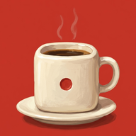

Kako se igra Jamb
Jamb je igra kockicama za jednog do šest igrača. Sličan je Yahtzeeju, ali sa jednom razlikom koja ga čini dubljim: listić ima nekoliko kolona, a svaka se popunjava svojim redom.
Potez
Igrači se smenjuju. Baci 5 kockica do tri puta, između bacanja zadrži koje želiš, pa rezultat upiši u jedno polje. Ako kockice ne odgovaraju polju, upisuje se 0. Kad su svi listovi puni, pobeđuje najveći zbir.
Kolone
Yamb Café počinje sa četiri kolone. U svakoj su ista polja, od jedinica do Jamba.
- ↓
- Na dole. Popunjava se redom, odozgo nadole.
- ↑
- Na gore. Popunjava se redom, odozdo nagore.
- ↕
- Slobodno. Bilo koje polje, bilo kojim redom.
- N
- Najava. Odmah posle prvog bacanja najaviš polje u ovoj koloni. Moraš ga upisati u istom potezu, najkasnije posle trećeg bacanja.
Bodovanje
| 1 – 6 | Zbir kockica sa tim brojem |
|---|---|
| Bonus za 1–6 | +30 kad zbir 1–6 u koloni dostigne 60 |
| Max, Min | Zbir kockica. Maks što veći, Min što manji. |
| (Maks−Min)×1 | Maks minus Min, puta broj jedinica u toj koloni |
| Kenta | 1-2-3-4-5 ili 2-3-4-5-6: 66 iz prvog, 56 iz drugog, 46 iz trećeg bacanja |
| Triling | Tri iste: 3 × broj + 10 |
| Ful | Tri iste i par: njihov zbir + 30 |
| Poker | Četiri iste: 4 × broj + 40 |
| Jamb | Pet istih: 5 × broj + 50 |
Pet istih važi i kao Ful, Poker ili Triling. Sve ovo se menja u Kućnim pravilima.
Dodatne kolone za kućna pravila
Ove kolone mogu da se dodaju pod „Kućna pravila“:
- ⇅
- Od sredine. Počinje se od Maks ili Min, pa ka spolja: gore do jedinica, dole do Jamba.
- ⇵
- Ka sredini. Počinje se od jedinica ili od Jamba, pa ka sredini do Maks i Min.
- R
- Ručna. Samo iz prvog bacanja.
Načini igre u Yamb Caféu
- Igraj protiv računara. Do pet protivnika, od početnika do Profesora.
- Dnevni Jamb. Iste kockice za sve. Jedna kolona, oko pet minuta.
- Hot seat. Jedan uređaj kruži oko stola. Do šest igrača, mogu i kompjuterski protivnici.
- Multiplayer. Svako na svom uređaju, uživo, gde god bio. Do šest igrača.
- Duel. Nije uživo: ti igraš sada, prijatelj odgovori kad stigne. Iste kockice za oboje, pa odlučuje samo znanje.
- Prave kockice. Ponesite prave kockice na druženje. Igra vam je beležnica: vodi listić i sve sabere.
U pregledaču na bilo kom uređaju, bez prijave.
Ova stranica na: English Hrvatski Srpski Bosanski Slovenščina Deutsch